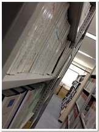

| 零～紫之日記 另一個故事 第五話 |
| ||
|
在舊校舍的 1 樓深處。從正門往學校內部看來的最深處，就是圖書館。 我那天沒去舊會議室，而是來到了圖書館，為了調查某件事… …而且，從這裡就看不見學校的中庭了。 |
||
|

因後山茂密的樹林陰影遮蔽光線， 所以這是學校裡最昏暗的地方 不知道是否因為時下的女高中生不是很愛來這種地方， 放學後幾乎沒什麼學生會來這。 那天也是，包含我在內只有幾個人，也就是說只有我們這幾個「常客」。 雖然基本上我也還算是時下的女高中生。 到底是在哪裡走歪了啊。 我們這些「常客」有個不互相干涉的潛規則， 各自在自己的勢力範圍內做各自的。 |
||
|
坐在有日照的山緣窗邊的位子，從日常喧囂的生活中稍為沉靜下來的我， 把這次來圖書館的目的先拋在一邊，開始發呆地想著最近發生的事。 「學姐」長谷部老師，最後並沒有來學校，而結束了實習生涯。 聽其他老師說是因為「身體無法康復，從大學休學並住院了」。 我不知道是不是真的，也並沒有想要深入詢問的意思。畢竟我又不是依子。 …說到依子，這幾天，她身體不適請了病假。 唉，我想太多了吧。至少現在這裡，仍如同往常一般。 我深吸著帶點樹木香氣的風，伸了個懶腰。 就在那時。 從昏暗的圖書館裡，幽暗的書架間，我感覺到往我這看的視線。 是在圖書館中陳列最古舊的書本的一區，那裡才是女高中生們絕對不會接近的地方。 在那暗處，像是溶入其中站著的… 『依子？』 反射性地提高聲量叫了她。「常客」們則用指責的眼光看向我。 我對那些視線投以歉疚的微笑後，視線收回到依子處。 在暗處裡低頭站著的那個身影，是依子沒錯。 明明應該是請了病假，是溜出家裡跑來找我嗎… 如果是這樣的話，那就非確認一下不可。 …依子也看到「那個」了嗎？這樣，不討論一下的話…唉，怎麼辦才好… 我站了起來。喀啷，沉重的木製椅子發出聲響。 雖然周圍的視線又再度朝向這邊，但我不再理會。 繞過大閱覽桌，從這看不見站在書架間依子的身影。 而離依子站立的書架還有幾公尺。我卻突然停下腳步。 因為我從那書架間，感覺到某種氣氛。 從那名「陰氣男」身上感受過的氣氛。不，是比那更濃烈、更黑闇的氣息。 心跳加快，一陣耳鳴。我壓抑著想要現在立刻逃出圖書館的衝動， 靠近書架的角落，偷瞄那書架之間。 …沒有人在那。 我大大地鬆了口氣。 對嘛，依子不可能在這裡的。因為放學時的班會也沒看見她出現。 是我眼花了…一定是這樣沒錯。趕快找找資料趕快走吧。 在那書架，擺放著一些民俗學中被視為異端邪說的「奇書」。 像是「神秘化學」或是「鬼界」…「詛咒」…等等的，一些依子的專長。 這邊搞不好可以找到一些關於日記的記載。 這樣一想，我開始掃視書架上陳列的書目。 然後，在那些褪色的書皮中 …我發現了那個。 那個，和鐵線蓮相同顏色的… 『如果看了那個…，不、不能調查那東西。』 那個陰氣男說的話，是真的。 |
||
| ||
|
- http://www.nintendo.co.jp/3ds/alcj/productionnote/anotherstory.html |

| 上一頁 | － 5 / 6 － | 下一頁 | ||